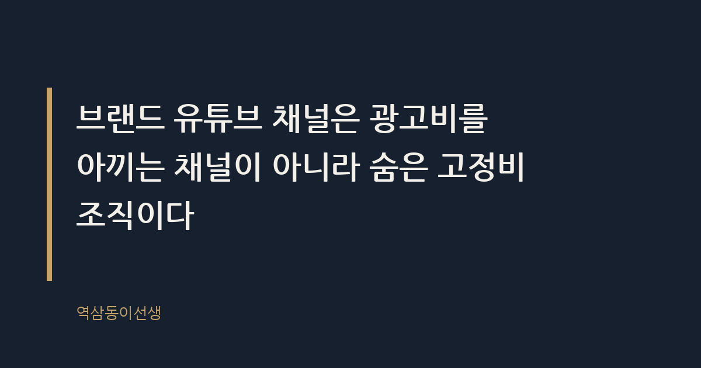
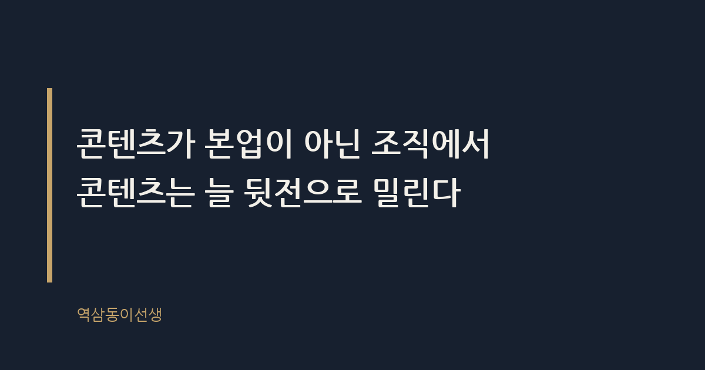

주제 브랜드가 유튜브 채널을 직접 운영할 때의 손익 (evergreen / brand)
제목 후보
메타 설명 브랜드가 유튜브 채널을 직접 운영할 때 드는 진짜 비용과 손익 구조를 현장 사례로 분석한다. 자체 운영과 외주, 인플루언서 협업 비교표 포함.
라벨 브랜드마케팅, 유튜브채널운영, 콘텐츠마케팅, 브랜디드콘텐츠, 디지털마케팅전략, 자사채널운영, 마케팅예산관리, 브랜드유튜브손익, 사내콘텐츠제작, 인플루언서협업비교
실용 자산 계산·기준 표 — 자체 운영·외주·인플루언서 협업의 비용과 리스크를 한눈에 비교해야 검색 유입 독자가 바로 의사결정에 쓸 수 있다
발행 전 팩트체크
이미지 (Blogger 편집기에 드래그해 넣으세요)
도입부 사진 · ⓒ Pexels / Pexels


몇 해 전, 마케팅 본부에서 자사 유튜브 채널을 론칭하자는 기획안이 올라왔다. 영상 전문 PD를 경력직으로 뽑고, 스튜디오 공간도 따로 마련했다. 첫 회의에서 다들 눈을 반짝였다. "이제 광고비 안 쓰고도 직접 소통할 수 있다"는 말이 돌았다. 여섯 달 뒤, 같은 회의실에서 예산 삭감안이 올라왔다. 구독자는 늘지 않았고 조회수는 두 자릿수에 머무는 영상이 수두룩했다. PD는 퇴사했고 채널은 업로드가 뜸해지다 결국 멈췄다.
이 장면은 특정 회사의 특이한 사례가 아니다. 브랜드 마케팅 쪽에서 일하다 보면 비슷한 기획안을 여러 번 본다. 대행사 비용이 아깝다는 임원의 말 한마디에서 출발해, 내부에 팀을 꾸리고, 콘텐츠 캘린더를 짜고, 분기 리포트에 '구독자 목표'가 적힌다. 문제는 그 목표가 대개 숫자만 있고 근거는 없다는 점이다.
브랜드가 유튜브 채널을 직접 운영한다는 건 대행사나 인플루언서를 거치지 않고 기획부터 촬영, 편집, 업로드, 댓글 관리까지 전 과정을 사내 인력으로 처리한다는 뜻이다. 겉으로는 광고비를 아끼는 선택처럼 보인다. 하지만 광고비 대신 인건비와 장비비, 그리고 무엇보다 '지속할 체력'이라는 새로운 비용이 생긴다.
당시 기획안 첫 페이지에는 "경쟁사 대비 구독자 3만 명 확보"라는 목표가 큼지막하게 적혀 있었다. 누가 그 숫자를 정했냐고 물으니 아무도 명확히 답하지 못했다. 그냥 '그 정도는 돼야 할 것 같아서' 나온 숫자였다. 근거 없는 목표는 꼭 반년쯤 뒤에 부메랑으로 돌아온다. 목표를 세운 사람과 책임지는 사람이 다를 때 특히 그렇다.
브랜드 유튜브 채널이란 기업이나 브랜드가 외부 대행사나 인플루언서에게 위탁하지 않고 자체 기획과 운영 체계로 콘텐츠를 만드는 채널이다. 흔히 '자사 채널', '오운드 미디어(owned media)'라는 이름으로 불린다. 광고주가 광고비를 지불하고 끝나는 구조가 아니라, 브랜드 스스로가 매체사가 되는 구조다.
손익분기점이란 채널 운영에 들어가는 고정비와 그로 인해 절감되는 광고비 또는 창출되는 성과가 같아지는 지점을 말한다. 문제는 브랜드 채널의 경우 이 지점을 계산하는 사람이 거의 없다는 점이다. 광고 집행은 예산 대비 효율을 ROAS로 바로 확인하지만, 자사 채널은 효과가 누적형이라 분기별 숫자로는 손익이 잘 보이지 않는다.
국내 기업 유튜브 채널 상당수가 구독자 수천 명 수준에서 정체돼 있는 것으로 알려�었다. 일부 대기업 채널을 제외하면 조회수 역시 광고 없이는 의미 있는 수준으로 올라가지 않는 경우가 많다. 채널 하나를 유지하려면 PD, 편집자, 기획자가 최소한으로도 필요하고, 여기에 촬영 장비와 스튜디오 임대료까지 더하면 고정비는 매달 쌓인다.
반면 광고 집행은 예산을 늘리면 그만큼 노출이 늘어나는 비교적 선형적인 구조다. 자사 채널은 투입 대비 결과가 선형적이지 않다. 6개월을 꾸준히 올려도 구독자가 안 늘다가, 영상 하나가 알고리즘을 타면서 갑자기 조회수가 뛰기도 한다. 이 불확실성을 임원 보고서에 설명하기가 쉽지 않다.
실제로 그 채널은 7개월 차에 올린 사내 문화 소개 영상 하나가 예상 못 한 조회수를 기록했다. 다들 "이거다" 싶어 비슷한 포맷을 서너 편 더 만들었지만, 어느 것도 처음만큼 반응이 오지 않았다. 한 번의 성공은 공식이 되지 않는다. 그 사실을 받아들이는 데 생각보다 오래 걸렸다.
브랜드 채널 조회수가 낮은 이유는 유튜브 알고리즘이 기업 계정보다 개인 크리에이터에게 노출을 몰아주는 경향이 있기 때문이라는 분석이 꾸준히 나온다. 시청자는 '회사가 하는 말'보다 '사람이 하는 이야기'에 머무는 시간이 길고, 알고리즘은 체류 시간을 가장 중요한 지표로 본다. 브랜드 채널 영상은 아무리 잘 만들어도 '광고 냄새'를 완전히 지우기 어렵다.
내부 인력이 금방 지치는 이유는 콘텐츠 제작이 마케팅 부서의 본업이 아니라 부가 업무로 취급되기 때문이다. 영업 지원, 행사 운영, 브랜드 캠페인에 치이다 보면 채널 업로드는 자연스럽게 뒤로 밀린다. 기획안 단계에서는 '전담 인력'이라 쓰여 있지만, 실제 조직도에서는 겸직인 경우가 대부분이다. 담당자가 이직이라도 하면 채널은 그날로 멈춘다.
그리고 가장 결정적인 건, 성과 측정 기준이 마케팅 부서의 다른 KPI와 맞지 않는다는 점이다. 광고 캠페인은 분기 단위로 ROAS를 보고하면 되지만, 채널은 구독자 수, 시청 지속 시간, 댓글 반응처럼 서로 다른 지표를 동시에 설명해야 한다. 숫자가 애매하면 예산부터 잘린다. 회의실에서 가장 먼저 사라지는 항목은 늘 '설명하기 어려운 성과'다.
초반 기획안에는 늘 '주 2회 업로드'처럼 보기 좋은 캘린더가 짜여 있다. 문제는 그 캘린더를 지탱하는 사람이 한 명이라는 데 있다. 기획, 섭외, 촬영, 편집, 자막, 썸네일까지 혼자 떠안은 담당자는 두세 달쯤 지나면 눈에 띄게 지친다. 그 회사도 처음 석 달은 캘린더대로 굴러갔다. 넷째 달부터 업로드일이 하루 이틀 밀리기 시작했고, 여섯째 달에는 '격주 업로드'로 조용히 수정됐다. 아무도 그 변경을 공식적으로 보고하지 않았다. 그냥 슬그머니 그렇게 됐다.
캘린더가 무너지는 신호는 명확하다. 업로드 예고편이 사라지고, 커뮤니티 탭 공지가 뜸해지고, 담당자가 회의에서 "다음 주에는 꼭"이라는 말을 반복하기 시작하면 이미 늦었다. 캘린더는 의지의 문제가 아니라 구조의 문제다. 혼자 다 하는 구조에서는 아무리 성실한 사람도 결국 지친다.
의외로 자사 채널 운영에서 가장 많이 간과되는 비용이 댓글 관리다. 영상 하나를 올리면 칭찬 댓글만 달리는 게 아니다. 제품 불만, 서비스 문의, 때로는 악의적인 댓글까지 섞여 들어온다. 이걸 누가, 어떤 기준으로, 얼마나 빨리 응대할지 정해두지 않은 채 시작하는 채널이 대부분이다. 그 회사도 초반에는 마케팅팀 막내가 틈틈이 댓글을 확인했는데, 업무량이 늘면서 며칠씩 방치되는 댓글이 쌓였다. 방치된 질문 댓글 아래 "여기 고객센터 맞나요?"라는 비아냥 섞인 댓글이 달린 걸 본 날, 팀 분위기가 가라앉았던 기억이 난다. 댓글창은 채널의 얼굴이자 민원 창구이기도 하다. 이 비용을 기획 단계에서 아예 빼놓고 시작하는 경우가 많다.
셋 중 무엇이 맞는지는 브랜드의 목적과 체력에 따라 다르다. 아래 표는 세 가지 방식을 실제 운영 관점에서 비교한 것이다.
| 구분 | 자체 운영 | 대행사 위탁 | 인플루언서 협업 |
|---|---|---|---|
| 초기 비용 | 높음 (인력·장비·공간) | 중간 (계약 기반) | 낮음~중간 (건당 집행) |
| 지속 고정비 | 매달 발생 | 계약 기간 동안 발생 | 건별 발생, 유연 |
| 콘텐츠 통제력 | 매우 높음 | 중간 (협의 필요) | 낮음 (크리에이터 색깔 반영) |
| 신뢰도·진정성 | 낮음 (광고로 인식) | 중간 | 높음 (팬덤 기반 신뢰) |
| 확장 속도 | 느림 | 중간 | 빠름 (기존 구독자 활용) |
| 최대 리스크 | 담당자 이탈 시 채널 중단 | 브랜드 색깔 희석 | 크리에이터 이슈 연루 |
그렇다고 자체 운영이 무조건 손해는 아니다. 고객 문의가 반복적이고 제품 사용법을 영상으로 계속 설명해야 하는 브랜드, 혹은 채용 브랜딩처럼 외주를 줄 수 없는 내부 이야기를 다루는 경우라면 자사 채널이 유리하다. 실제로 제품 문의가 반복되는 B2B 브랜드라면, 영상 하나가 상담 전화 열 통을 대신하기도 한다. 그런 채널은 조회수가 낮아도 '검색해서 찾아오는' 용도로는 제 역할을 한다. 다만 시작 전에 다음 세 가지는 반드시 확인해야 한다.
이 세 질문에 자신 있게 답하지 못한다면, 자사 채널보다 외주나 인플루언서 협업으로 시작해 데이터를 먼저 쌓는 쪽이 안전하다.
브랜드 유튜브 채널은 광고비를 아끼는 채널이 아니라 숨은 고정비 조직이다. 광고는 끄면 그만이지만, 채널은 멈추는 순간 '방치된 브랜드'라는 인상을 남긴다. 그 회의실에서 결국 채널을 접기로 한 날, 다들 안도하는 표정이었다. 처음 시작할 때의 반짝이던 눈빛과는 전혀 다른 얼굴이었다. 콘텐츠가 본업이 아닌 조직에서 콘텐츠는 늘 뒷전으로 밀린다. 씁쓸하면서도 꽤 익숙한 결말이다.
Q. 혹시 다니는 회사에서 야심 차게 시작했다가 조용히 멈춘 자사 유튜브 채널, 본 적 있으신가요?